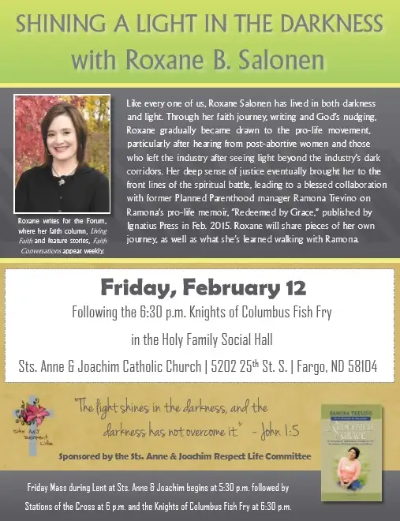

It comes from a line in the poem by Rita A. Simmonds, “Hungry for Mercy (1 Cor. 15:10),” found on p. 78 of the Magnificat “Year of Mercy Companion.”
The streets of my days
are lined with food
I cannot eat.
My hunger strike’s God’s mercy.
It is my greatest strength.
I write on Fat Tuesday; the day before Ash Wednesday, the beginning of Lent; the day when we Catholics are known to indulge in one more sweetened coffee, one more filled donut, one more of whatever we love, before we go on our 40-day fast.
I can imagine that in the next 40 days, this line, “The streets of my days are lined with food I cannot eat,” will haunt me more than once. We start out eager to please the Lord, but in our human condition, soon, we grow weary and weak.
But there is something about Lent that I have come to love. I shared with my faith-sharing friends today that it may have something to do with my introversion. I thrive on chances to crawl into quiet spaces to restore, and Lent provides a wide opening for such times.
Friday night, I will be giving a talk at our parish, after a Lenten fish meal.

I’m excited, and scared. “Through God, all things are possible,” I keep reminding myself. It is exhilarating to share one’s story, but I still have to talk myself into it when the time comes to walk up to a podium and be “on.” It is a gift, a joy, and a terror all at once.
But I am happy to be part of the Lenten launch. What starts as an opportunity to share with others becomes a gift that I receive in turn. For this, I am grateful.
Because I find it helpful to name my Lenten commitments — or at least those that can be made public — I will do so today, more for myself than anything. And then, I will grow quiet for a while. With the rare exception of something that cannot be contained needing a place to land, my blogging pen will rest these next 40 days. I will still be writing stories and columns and preparing for talks. Only the blogosphere will notice – or not – the quiet.
Thanks for allowing me to bring these Lenten goals here. I look forward to what Lent 2016 will bring, to the transformation that may come from pulling into the sacred places that bring such rich illumination. And I look forward to hearing how you plan to approach Lent as well!
For Lent 2016, I commit to:
- Reading the book (which arrived today!), “Create in Me a Clean Heart: Ten Minutes a Day in the Penitential Psalms,” A Lenten Journal by Sarah Christmyer
- Continued reading of the above-mentioned “Year of Mercy Companion” and its counterpart, “Magnificat” (daily Scripture readings and devotionals)
- Friday bread and water fasts with Rosary as part of the #LentenMercyChallenge
- Resuming my commitment to my fitness tracker (a bit neglected lately)
- Putting down devices and truly pausing when the kids are seeking to engage
- Reflecting on daily email guidance from Matthew Kelly’s “The Best Lent Ever” and Bishop Robert Barron’s Daily Lent Reflections
- Reading, with hubby, this book by local author and friend Greg Jeffrey
This ought to be a good start anyway! Most of all, I hope to stay open to the things God wants to show me that perhaps I’ve closed myself to until now. “Here I am, Lord.”
It can be a little scary diving in deep for Lent, so my usual mantra also will remain close: “Jesus, I trust in You!”
I pray that by the end of it all, I’ll have developed a greater hunger — for faith, hope and charity — the kind that will indeed strike God’s mercy.
Q4U: What does Lent mean to you, and what commitments have you made for the duration?